7 Anki: customização de baralhos
Há certas palavras que possuem muitos significados, e que só o contexto vai poder nos dizer com segurança qual deles deve ser considerado. Há também algumas que talvez possuam um só significado, mas que podem ser especialmente difíceis de memorizar, seja por ser rara, seja por parecer com outras, seja por não se conectar muito bem com o nosso mundo pessoal.
O aprendizado é facilitado pela conexão entre as ideias. Talvez seja possível afirmar até que não haja aprendizado sem conexão. Quando você consegue conectar um conceito a uma aplicação, não só é mais fácil memorizá-lo, como é possível que você não tenha nem que se preocupar com “decoreba”. Quando você gosta de um assunto, aprendê-lo é mais fácil. Uma das explicações para disso é que os conceitos que compõem esse assunto são importantes para a sua vida, então eles estabelecem conexões com áreas do seu interesse. É por isso que é importante criar memórias carregadas de emoção no nosso processo de aprender uma língua.
Estudar com uma pessoa ou em um lugar específico também pode nos ajudar a aprender. A associação não se dá apenas com ideias, mas com pessoas, locais, cheiros, sons e qualquer outro tipo de coisa. Porém, isso pode não ser perfeitamente factível quando estamos querendo aprender uma língua. Talvez não conheçamos outras pessoas que querem aprendê-la conosco, ou não temos (ou podemos ter) um lugar específico para nos dirigirmos só para estudá-la.
A proposição continua de pé, entretanto: quanto mais conexões conseguimos fazer entre as informações, mais fácil se torna o processo de aprendê-las. Um flashcard que contenha apenas uma palavra na Frente e a sua tradução no Verso não é algo muito estimulante. Com frequência vai ser algo pouco memorável, podendo ser chato, e facilmente esquecível. É preciso então considerar como incluir mais informação nesse baralho.
É claro, podemos simplesmente ir inserindo informação nos campos de Frente e Verso na hora de criarmos as nossas cartas, mas isso pode facilmente virar uma bagunça. Uma forma de evitarmos esse tipo de confusão é criar novos campos para as nossas cartas. Para não alterar de forma indesejável as cartas que já existem, vamos criar um tipo novo de carta.
7.1 Criando diferentes tipos de notas
A primeira coisa que deve ser feita é abrir o menu de edição de notas, sinalizado pelo título “Gerenciar Tipos de Notas”:
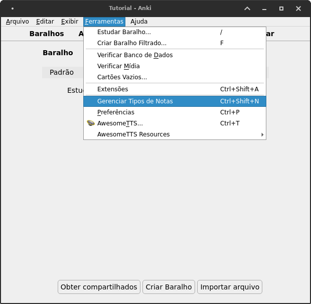
Você será recebido com um menu que contém diferentes opções e que expõe quais tipos de cartas já estão disponíveis. Você provavelmente verá os seguintes tipos: - Básico - Básico (cartão invertido opcional) - Básico (digite a resposta) - Básico (e cartão invertido) - Omissão de palavras
Se você tiver baixado algum baralho no AnkiWeb Shared Decks, você provavelmente verá um ou mais tipos diferentes nesta lista. No lado direito, cliquemos em Adicionar.
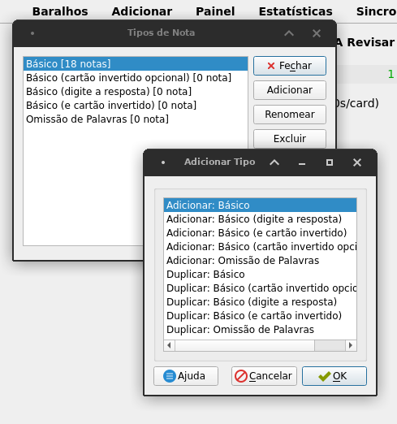
Escolha “Adicionar: Básico”. O programa pedirá que você escolha um nome. Aqui eu colocarei o nome de “Básico com exemplos”. Sugiro que você faça o mesmo, pelo menos ao longo dessas instruções. Feito isso, você verá um novo tipo de carta aparecer na lista. Selecione o tipo recém-criado e depois clique em Campos.
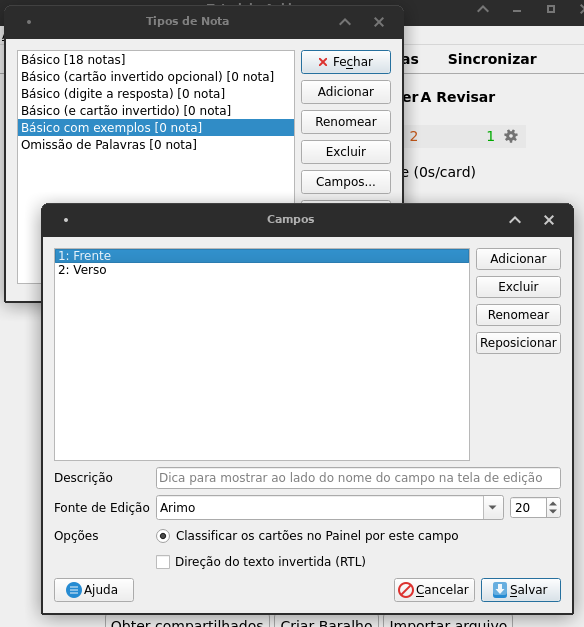
Você perceberá que tal como antes esse tipo de cartão só tem os mesmos dois campos de antes: Frente e Verso. Agora nós vamos criar nos campos.
Clique em adicionar e, um de cada vez, crie os seguintes campos (sem as aspas): - “Exemplo” - “Tradução do exemplo” - “Áudio”
O nome que você coloca fará diferença daqui a pouco, portanto seja consistente. Se você for colocar nomes diferentes, ou se for colocar tudo em maiúsculo, ou tudo em minúsculo, ou se vai capitalizar as iniciais de cada palavra, tenha isso em mente. Você deve ter a seguinte tela como resultado:
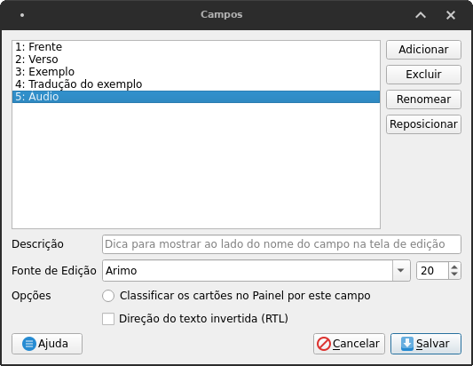
Clique em Salvar e voilà, você criou novos campos para esse tipo de flashcard.
Por ora, entretanto, isso não vai mudar nada nas nossas vidas. Nós criamos novos possíveis campos para o nosso “Tipo de carta” que nomeamos “Básico com exemplos”. Agora precisamos adicionar estes campos ao cartão.
7.2 Editando
Para fazer essa adição, ainda selecionado o nosso tipo de cartão recém criado (“Básico com exemplos”), clique em Cartões. Você verá algo parecido com a seguinte tela:
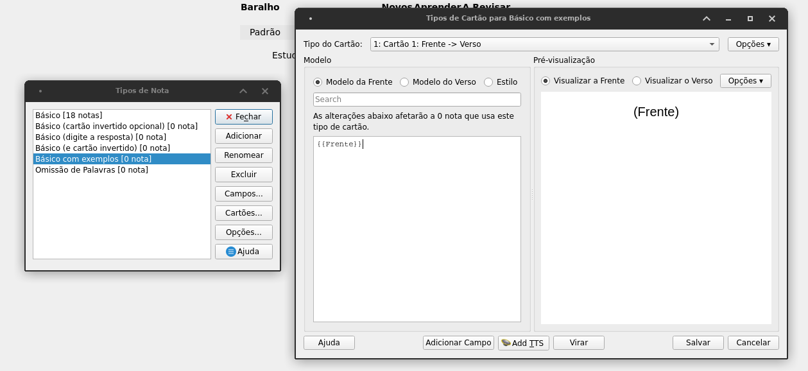
Esse é um modelo desse tipo de flashcard. Ele serve de molde para todos os cartões desse tipo que você criar.
Do lado esquerdo dessa tela, você verá as opções Modelo da Frente e Modelo do Verso. No lado esquerdo você verá também um campo para digitação em que está escrito “{{Frente}}”. Tudo o que você elaborar neste campo comporá a parte da Frente do seu cartão. Se ao lado do “{{Frente}}” eu inserir os caracteres “——– exemplo”, eles serão renderizados ao lado. Veja:
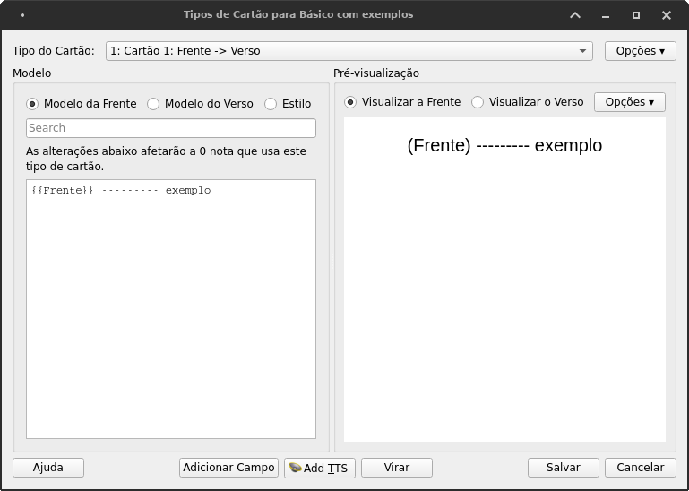
Mas do que vale esses dizeres, “{{Frente}}”? Tudo o que fizer parte do seu campo da Frente aparecerá aí. Por exemplo, se eu tenho um flashcard cuja Frente é “Alright”, se neste modelo estiver escrito “{{Frente}} ——— exemplo”, na hora do meu estudo eu verei “Alright ———– exemplo”.
O que quer dizer que o que eu colocar no campo “{{Exemplo}}” (entre colchetes) aparecerá no mesmo lugar na hora do estudo. Vamos editar o campo da frente, então, para deixá-lo da seguinte forma:
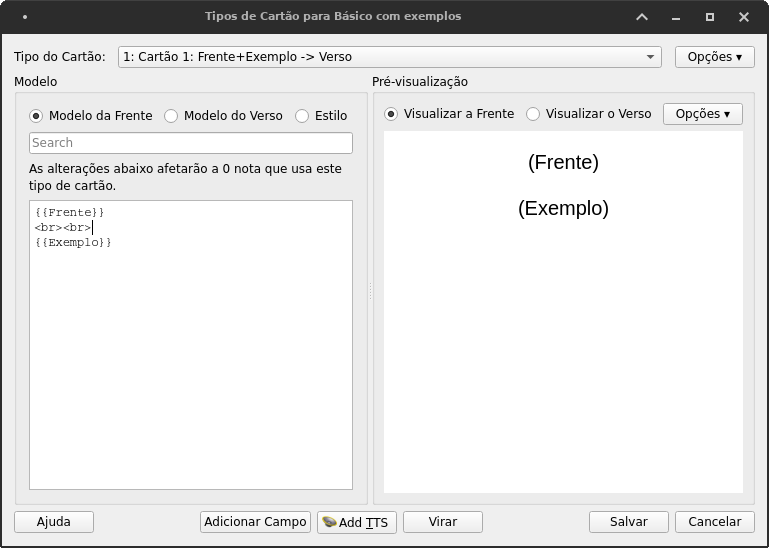
Os nomes para os campos que criamos em Criando diferentes tipos de notas são os nomes que precisamos considerar aqui. Se inserirmos um nome que não definirmos previamente, seremos recebidos com um erro do lado. Por exemplo, se o campo que tivermos criado no menu Campos tiver sido “Exemplo” mas aqui escrevermos “Exemplos”, no plural, o programa não entenderá o que você quer dizer e apresentará um erro. É necessário ser exato e colocar aqui exatamente o que você inseriu no menu Campos.
Você pode estar estranhando por que nós inserimos esses “<br><br>” entre “{{Frente}}” e “{{Exemplo}}”. Essas são tags HTML. Não nos aprofundaremos nisso, mas nós iremos abordá-las brevemente na última seção deste capítulo, caso você queira se familiarizar mais com as possibilidades deste menu. Em essência, entretanto, essas tags “<br><br>” servem para pular a linha, para que o conteúdo dos campos “{{Frente}}” e “{{Exemplo}}” não fique na mesma linha.
Vamos fazer o seguinte. Vamos inserir também o campo “{{Áudio}}” nessa mesma parte do flashcard, logo acima do campo “{{Frente}}”:
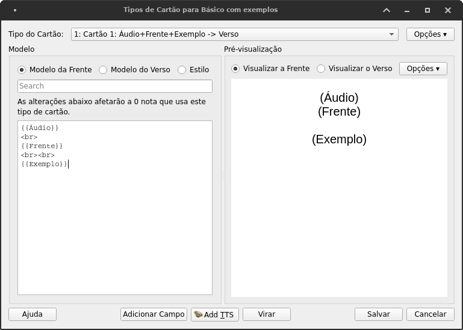
O motivo de só termos inserido apenas uma tag “<br>” agora é puramente estético. Feito isso, a parte da frente do nosso cartão está pronta. Clique agora em Modelo do Verso.
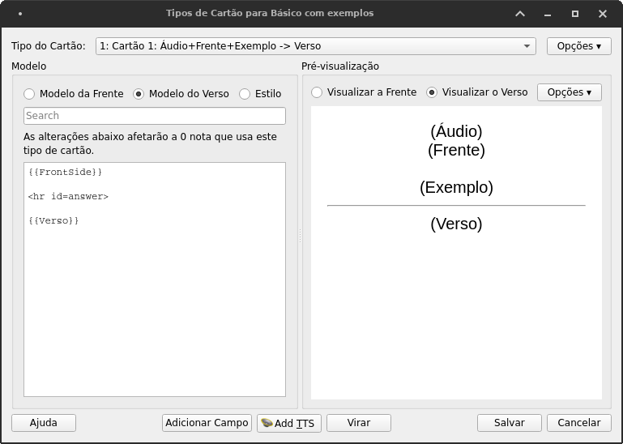
Você deve ver, do lado direito, uma cópia do que você criou na parte anterior deste menu, adicionada de uma linha que a separa na metade e o campo “{{Verso}}”. Do lado esquerdo, há o campo “{{FrontSide}}”, que representa o lado da Frente que você editou anteriormente, com todas as coisas que você acrescentou, incluindo os campos “{{Áudio}}”, “{{Frente}}”, “{{Exemplo}}” e as tags HTML para pular de linha.14
Vamos agora fazer uma breve edição: vamos apenas adicionar o campo “{{Tradução do exemplo}}” ao Modelo do Verso, da seguinte forma:
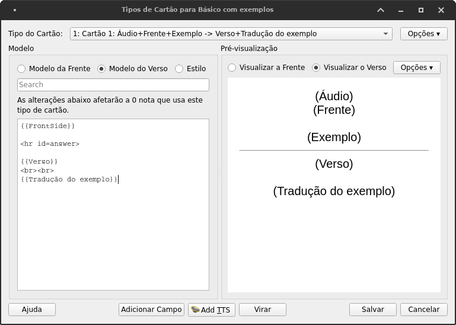
Feito isso, podemos clicar em Salvar, no campo inferior direito deste menu. A seção Estilo nós veremos na última parte deste capítulo, logo após abordarmos a interação desta funcionalidade com as planilhas.
Estaremos de volta ao menu dos Tipos de Nota. Fechemos este menu também. Agora vamos clicar em Adicionar para inserir cartas novas como vimos no capítulo Anki: primeiros passos. Precisamos alterar o tipo de cartas que estamos utilizando. Clique em Tipo e selecione o Tipo que criamos anteriormente:
Baralho.Você verá agora uma multiplicidade de campos. Podemos então preenchê-los da seguinte forma, por exemplo:
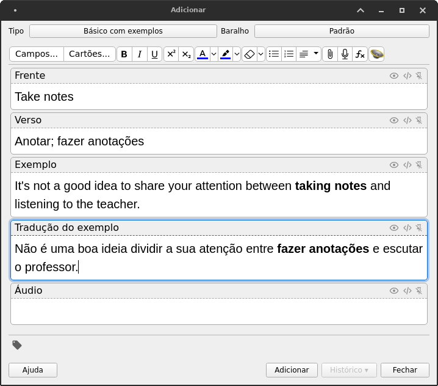
Vou deixar o campo de Áudio vazio de propósito neste momento. Tal como no capítulo anterior, nós podemos acrescentar áudio a este campo com base no conteúdo de outros campos:
Frente (“take notes”) e criando um arquivo de áudio que será armazenado no campo Áudio. Isso deixa nossos baralhos mais organizados.Ao estudarmos os nossos cartões, veremos o cartão que criamos da seguinte forma:
Ao clicarmos para ver o Verso da carta, veremos também o campo “{{Tradução do exemplo}}”:
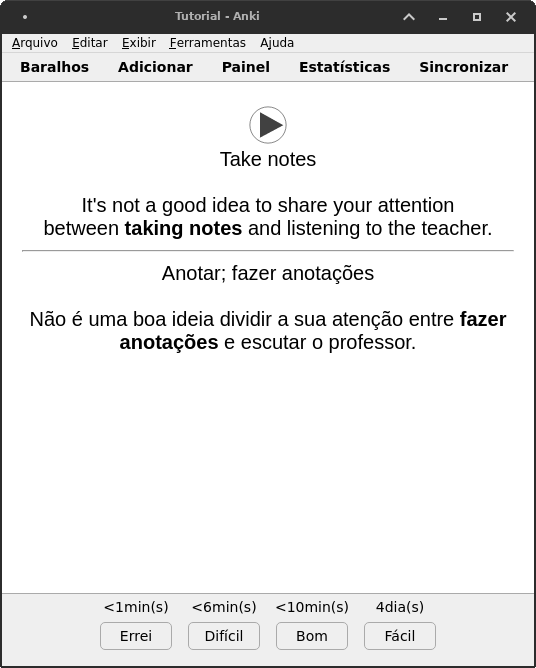
Está feito! A inserção de diferentes campos pode nos ajudar a colocar informações diferentes, conforme nosso desejo e necessidade e de forma organizada, nos nossos cartões. Pode-se adicionar diferentes campos, por exemplo, um para imagens, outro para classe gramatical… Enfim! Aqui, as diretrizes são a necessidade e a criatividade.
Mas dito isso, pode ser útil considerar como podemos organizar planilhas para criar cartas com esses múltiplos novos campos. Veremos isso agora.
7.3 Usando planilhas para criar cartas com múltiplos campos
A princípio, a ordem dos campos (definida no menu Campos na hora de criá-los) é a ordem das colunas da planilha, da seguinte forma:
Assim, basta organizarmos a ordem das colunas para que correspondam à ordem dos campos que criamos e populá-las de acordo – lembrando que costuma ser mais eficiente deixarmos para popular os campos de áudio usando o AwesomeTTS em vez de tentarmos preenchê-lo manualmente. Feito isso, basta salvarmos em formato .csv em importar normalmente como faríamos.
Contudo, caso tenhamos mudado a ordem de alguma coisa (seja a ordem dos nosso campos no menu Campos, seja a ordem dos conteúdos nas colunas) nós podemos remediar essa situação na hora de importar o conteúdo da planilha para o nosso baralho. Basta parearmos a ordem da planilha com o dos campos na hora da importação:
E está feito.
Não precisaremos saber de mais do que isso para estudarmos e elaborarmos material de estudo no Anki. Verdadeiramente, esse é o essencial. Contudo, o Anki pode ter uma aparência um tanto simples. Além disso, pelas planilhas nós não podemos fazer edições na aparência do conteúdo das nossas cartas – caso queiramos, por exemplo, deixar uma palavra ou outra em negrito.
Podemos deixar as nossas cartas mais atraentes ou mais didáticas utilizando HTML e CSS. O resultado aqui é puramente estético, mas pode valer a pena deixar as cartas que vamos estudar por meses a fio um pouco mais agradáveis de se olhar.
Contudo, HTML e CSS são um assunto bem técnico e especializado – sendo sobretudo parte da ocupação de desenvolvedores e designers de websites. Não entraremos a fundo – apenas veremos o básico do básico, para termos noção do que é possível. Caso você queira se aprofundar neste tema, há múltiplos recursos. Um que eu recomendo é a trilha de HTML e CSS do Khan Academy.
7.4 HTML e CSS
Esta seção é puramente técnica e estética. Se você não aguenta mais ficar olhando para a tela branca do seu baralho do Anki, você pode usar o conteúdo que você vai aprender aqui Se editar mexer com código de computador te causa ansiedade, saiba que deixar esse capítulo de lado não vai impedir você de aproveitar este método. Dito isso, se você seguir adiante e lê-lo, perceberá que não é tão difícil quanto parece.
7.4.1 HTML no conteúdo das cartas
Como é que o Anki faz com que certas palavras ou frases fiquem em negrito, itálico ou colorido? Ele usa HTML.
Se você for no menu Painel, você pode visualizar uma das suas cartas que têm algum caractere em negrito. Exemplo:
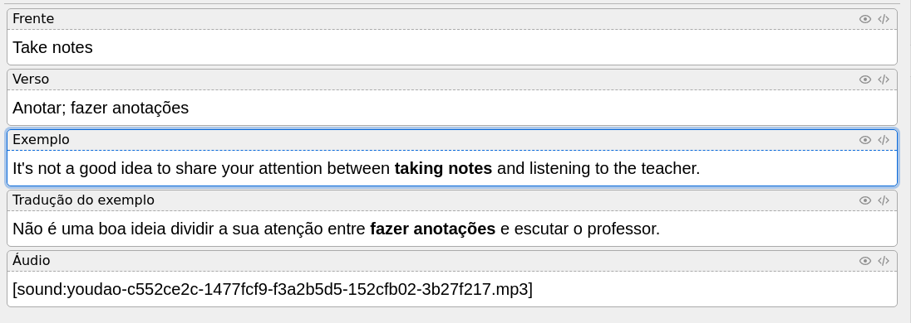
No canto superior direito de cada um desses campos, você tem um símbolo que parece com um olho, e logo ao lado um símbolo que representa o código em HTML utilizado para renderizar o texto dessa forma (“</>”). Clicando nele, você pode ver o HTML que faz parte desse texto:
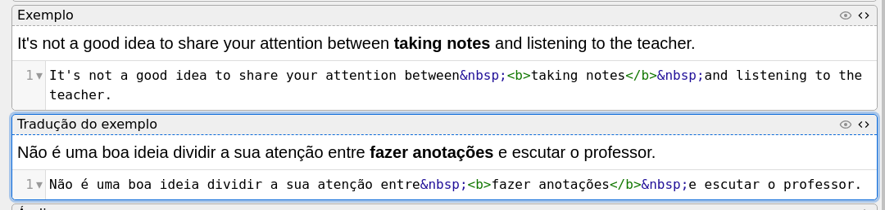
O código HTML presente ali é este:
A parte que nos é de interesse é especialmente a da tag <b></b>. A primeira parte desse código (<b>) abre a função “negrito” (o “b” representa “bold”, inglês para “negrito”), e a segunda (</b>) a fecha. Qualquer palavra ou conjunto de palavras entre essas duas partes será renderizada em negrito. Toda tag HTML é composta de <> e é fechada com </>. Assim, nós temos:
<b>e</b>, para deixar o texto em negrito;<i>e</i>para deixar o texto em itálico<div>e</div>para criar divisórias na página.
E assim por diante. É aqui que entra o valor da função Permitir HTML em campos na janela de importação do Anki: como você não pode importar texto em negrito das planilhas, você precisa incluir as tags HTML nelas caso você deseje que elas fiquem em negrito, itálico ou de algum outro modo editadas. Por exemplo:
Porém não é apenas o conteúdo do texto que pode ser editado usando HTML. Você pode editar a própria aparência da carta utilizando-o.
7.4.2 HTML na estrutura das cartas
Vamos voltar ao campo Cartões do menu de edição do tipo de nota. Selecione o Tipo “Básico com Exemplos” e clique em Cartões. Você será recebido com o modelo de carta que criamos anteriormente.
Eis o que faremos com essas cartas: - Alteraremos a cor do plano de fundo para algo menos intenso que esse branco (talvez um amarelo-palha, talvez um azul claro); - Colocaremos os campos “{{Exemplo}}” e “{{Tradução do exemplo}}” em uma caixa separada, mais escura, e mudaremos a cor da fonte para uma cor mais clara.
Mãos à obra.
7.4.2.1 Alteração do plano de fundo
Clique em Estilo. Você está vendo um pedaço de código CSS.
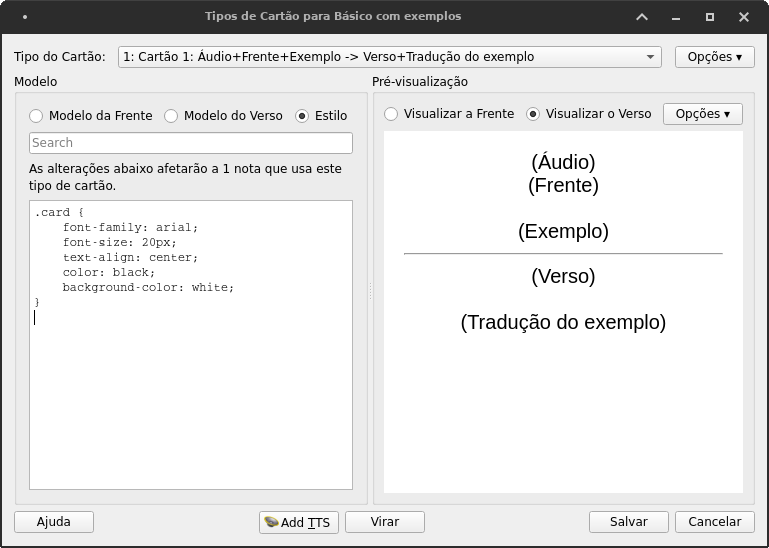
Eis o que esse código significa:
- .card: o objeto a ser editado faz parte da classe “card”. Essa classe foi definida pelo próprio Anki. Os colchetes abertos dizem que os próximos comandos são referentes à edição deste objeto.
- font-family: define que a fonte a ser utilizada deve ser “arial”. O ponto e vírgula (
;) encerra a edição desta propriedade para que possamos editar a próxima. É necessário encerrar toda e qualquer edição de propriedades CSS com ponto e vírgula. - font-size: define que o tamanho da fonte deve ser de 20px (ou “20 pixels”).
- text-align: define que o texto deve ser centralizado. Ele poderia estar alinhado à esquerda ou à direita, mas ele está centralizado.
- color: define que a cor do texto deve ser preto.
- background-color: define que a cor do plano de fundo deve ser branco. Nós editaremos esse primeiro.
Mas que cor usaremos? Se escrevermos “yellow” no lugar de “white” vai funcionar muito bem, mas ficará simplesmente horrível. Vamos, faça o teste.
O que nós precisamos fazer é usar um código hexadecimal para colocar a cor que desejamos. Isso pode ser feito facilmente utilizando o Colour Picker do Google. Se você pesquiasr “Colour Picker” no Google você será recebido com esse painel:
Depois de selecionar uma cor que te agrada, copie o código hexadecimal gerado e cole-o no lugar da propriedade background-color. Eu escolhi o código #f0eac2, que é um amarelo bem claro. Se você estiver interessado em entender melhor como esses códigos de cores funcionam, talvez você precise se aprofundar um pouco mais em HTML e CSS do que compete o escopo desse site, e para isso eu recomendo o Khan Academy.
Sigamos em frente.
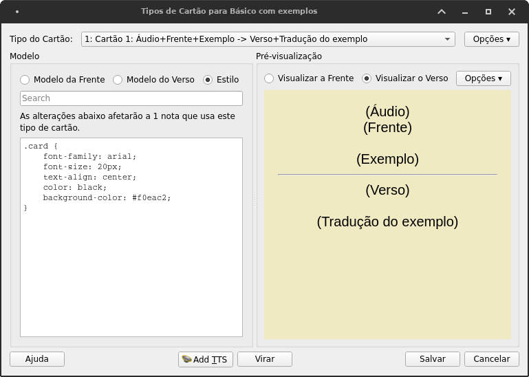
Depois de editar a cor do plano de fundo, nós vamos agora envolver os nosso campos “{{Exemplo}}” e “{{Tradução do exemplo}}” em uma divisória mais escura, apenas para separá-la do resto da carta. Para isso, precisamos voltar na seção Modelo da Frente e fazer uma pequena edição. No campo de edição do Modelo da Frente você deve ter um código mais ou menos assim, se você seguiu as edições que fizemos nas seções anteriores desta capítulo:
O que nós vamos fazer é criar uma tag <div> (que cria uma “divisória”) ao redor do {{Exemplo}} e atribuir a ela uma classe chamada “exemplos”:
Essa propriedade class (classe) serve para que possamos editar todos os objetos que tenham essa mesma classe de uma vez só, sem precisarmos editar um por um. Esse mesmo tipo de edição deve ser feito no Modelo do Verso, deixando-o assim:
{{FrontSide}}
<hr id=answer>
{{Verso}}
<br><br>
<div class="exemplos">
{{Tradução do exemplo}}
</div>Circundamos o Campo “{{Tradução do exemplo}}” com a tag <div>, que tem a class “exemplos”.
Agora nós editaremos os dois campos de uma só vez. Se nós formos agora para a seção Estilo podemos acrescentar o seguinte código ao campo de edição:
.exemplos {
background-color: #21212166;
width: 80%;
margin: auto;
padding: 7px;
border-radius: 5px;
text-align: left;
color: #fafafa;
font-size: 16px;
}Assim, tanto {{Exemplo}} quanto a {{Tradução do exemplo}} ficarão semelhantes entre si e diferentes do resto do conteúdo. Não copie e cole: vá fazendo essas edições uma a uma, e você entenderá o que cada uma dessas linhas quer dizer. Dito isso, vamos desmembrá-las:
- background-color: como vimos anteriormente, altera a cor do plano de fundo. Eu escolhi
#21212166, que é um cinza escuro com um pouco de transparência. - width: É a largura da divisória. Escolhi “80%” para fazer com que essa divisória ocupe 80% da página.
- margin: é a distância que a divisória tem das margens da página. O valor
autorepresenta “automático”, que por padrão coloca a divisória no meio da página. - padding: dá uma “inchada” na divisória, para que ela dê espaço para que o texto respire.
- border-radius: é o “raio da borda”, ou seja, o quanto as quatro pontas da divisória são curvas.
- text-align: alinha o texto em alguma direção. O padrão do Anki é “center”, o que resulta em texto centralizado. Quis alinhar à esquerda os exemplos para diferenciá-los, então dei o valor “left”.
- color: muda a cor do texto. O valor
#fafafaé um cinza bem claro, quase branco. - font-size: define o tamanho do texto dos exemplos dentro da divisória. Escolhi 16px (16 pixels) porque queria que esse texto fosse menor do que os da {{Frente}} e do {{Verso}}.
O resultado é este:
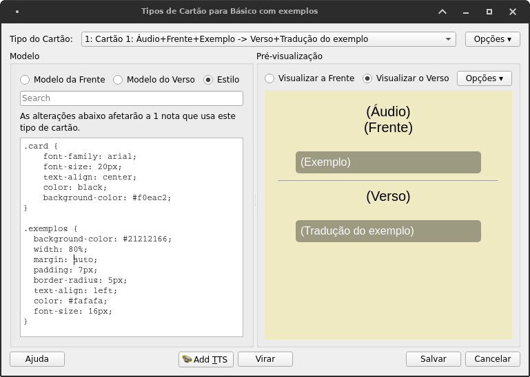
Que ao salvarmos (clicando em Salvar) e vermos sendo utilizado de fato em uma das notas que criamos, resultará nessa forma de representar nossos flashcards:
Tipo “Básico com exemplos”. Outros flashcards que não sejam desse tipo continuarão como antes.E claro, a forma como fazer isso é questão de gosto. Você pode preferir outras cores, ou mudar a ordem dos elementos, ou deixar uma coisa maior do que a outra, ou o que quer que seja. O que importa é que você saiba que, caso você queira, você pode editar a aparência das suas cartas para a forma que você quiser.
Atenção! o campo “{{FrontSide}}” não representa apenas o campo da “{{Frente}}”, mas todo o lado da frente do seu flashcard, contendo todos os campos que você inseriu no lado da frente, não apenas o campo que tem esse mesmo nome.↩︎